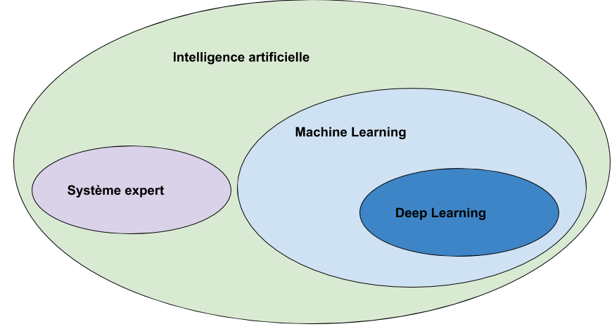
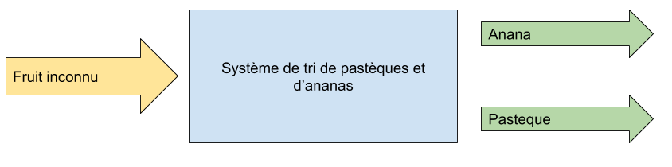

def generateSet(prototype,nbrEchantillon,coef):
rand_value=np.random.randn(len(prototype),len(prototype[0]))/coef
#print(rand_value)
rand_set=prototype+rand_value
if nbrEchantillon == 0 :
return prototype
else:
return np.concatenate((rand_set,generateSet(prototype,nbrEchantillon-1,coef)))Que faire avec un neurone ?
When one teach, two learn
— Robert Heinlein
Sommaire
Qu’est ce que l’IA
Historique
Le neurone
Processus de traitement
Exemple
Qu’est ce que l’IA

Historique
1940 : Alan TURING : Machine de Turing
1943 : Warren McCULLOCH & Walter PITTS Modèle formel de neurone.
1949 : Donald HEBB : Mémoire associative, premières règles d’apprentissage.
1960 : Franck ROSENBLATT et Bernard WIDROW, Perceptron et Adaline.
1980 : Stephen GROSSBERG et Teuvo KOHONEN Auto-organisation des réseaux et adaptation
Historique
1986 : Paul Smolenski : Machine de BOLTZMANN
1997: Deep Blue
2011 : Watson
2014 : LeCun Deep Learning
2015 : Alpha Go
2018 : Alexa
Les modeles
Non-supervisé
Foret aléatoire
Clustering et réduction de dimension
SVD
Analyse par composante principale (a noyau ou non)
Règles
Supervisé
Régression linéaire ou logistique
Descente de gradient
Régression polynomiale
Séparation a vaste marge (SVM)
Arbre de descision
Classification linéaire ou non linéaire
Réseau de neurone
Naïve bayes
Le neurone
Outil mathématique
Formalisé par McCULLOCH et PITTS
Le neurone biologique

Constitution
d’un noyau : le cœur de la cellule neuronale
de dendrites permettant d’agréger les informations entrantes venant des synapses
d’axones fournissant la réponse neuronale
de synapses : interconnexion entre les axones et les dendrites permettant le transfert de l’influx nerveux
Quelques nombres
100 Milliards de neurones
10000 Synapses par neurone
10^15 Synapses dans le cerveau humain
Utilité
Mémoire et persistance des données dans le temps
Réflexion, élaboration des idées, associer des concepts et des stratégies
Sens, Analyse des données, traitements des sons, des images, du touché
Construction d’une réponse moteur, l’équilibre, l’orientation, la marche, dextérité
Le neurone formel


a la sortie du neurone
xi, le signal d’entré
wi, le poid de ponderation
biais, une constante de pondération
f, la fonction d’activation
Le neurone formel

La fonction d’activation
Lineaire

Sigmoire

Limiteur

Processus
Analyse du probleme
Nettoyage des données
Visualisation des données
Jeux de test
Jeux d’entrainement
Definition d’un modele
Apprentissage
Mesure d’efficacité
Mise en exploitation
Exemples
Probleme de tri

a rugosité → 0 lisse a 1 rugeux
la couleur → 0 bleu a 1 rouge
la forme → 0 rond a 1 alongé
le poid → 0 (20gr) à 1 (2000gr)
Les données
Les données
pasteque=np.array([[0.2, 0.3, 0.2, 0.95]])
anana=np.array([[0.8, 0.65, 0.6, 0.8]])
pasteques=generateSet(pasteque,1999,4)# -> pour separer les ensembles
ananas=generateSet(anana,1999,4)Les données

La classification lineaire
def neuroneLim(entre,W,biais):
a=np.dot(entre,W.T)-biais
#print("a neurone:",a)
if a > 0:
return 1
return 0